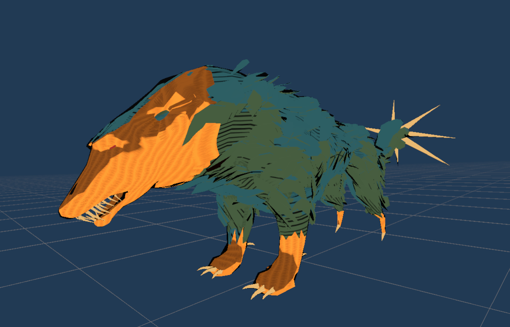
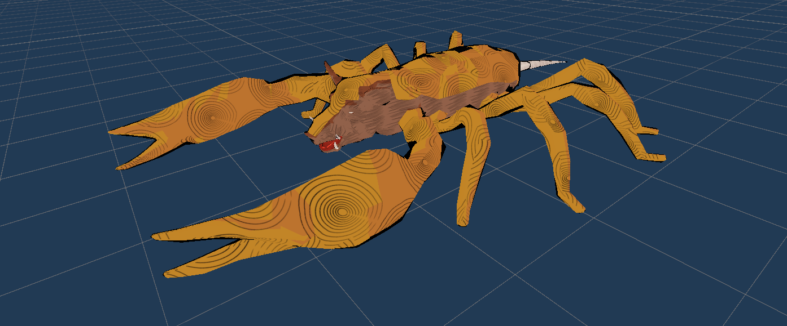
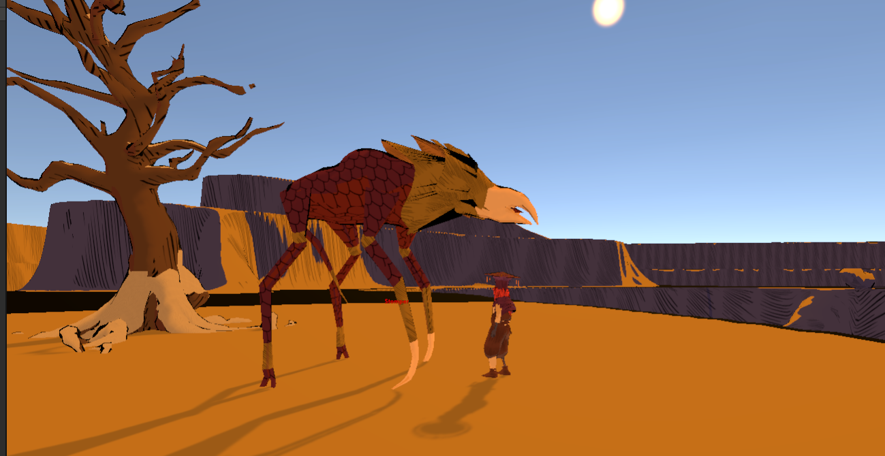

Co ti tak trvalo?
Ahoj. No… chvíli to trvalo. Ale jsme zpátky. Další gamedev blog? log? nevím. Bylo hodně práce kolem webu a dalších věcí, ale posun se děje. Poslední týdny jsem makal na víc frontách najednou. Hlavně bylo potřeba dát věci do pořádku. Udělal jsem si něco jako todo list a můžeš se na něj podívat tady. Zároveň jsem vytvořil roadmapu, kterou najdeš i na webu v portfoliu.
Možná to nevypadá jako moc práce, ale plánování je ve vývoji her naprosto zásadní. Nevyplácí se jen tak „něco dělat“. Člověk potřebuje plán. A protože už plán mám, začal jsem pracovat na věcech, které musí být hotové do konce roku. Progres se dá sledovat i na Trellu, pokud se ti chce přihlásit.
Pořád nemůžu říct, že vývoj není chaotický, ale poprvé mám pocit směru a nějakých hranic. Takže dost keců a jdeme na to podstatné. Udělal se nějaký reálný progres? Posuď sám. Tentokrát jsem se soustředil hlavně na monstra.
Geckyena
Hybrid hyeny a gekona. Podle lore kombinuje nejlepší vlastnosti obou zvířat v jedno ultimátní přežívací stvoření psovitého typu. Obvykle je velmi divoká a agresivní, ale některé kusy si nomádské klany ochočují i doma ve svých stanech. Často se pohybuje ve smečkách. Podobně jako hyeny vyhledává mršiny a zbytky po alfa predátorech, ale v některých případech může zaútočit i na malé skupiny lidí. Typicky se objevuje v pouštních oblastech a kombinace šupin a srsti jí dává vysokou odolnost vůči drsnému prostředí.

Scorphog
Hybrid škorpiona a prasete. Zní to divně, ale v rámci světa to jde vysvětlit docela snadno. Pravděpodobně šlo o zvířata, která byla kdysi v nějaké zoo blízko sebe. Po dlouhém působení radiace a anomálií z toho vzniklo tohle. Dnes se toulají pouští a nenechávají po sobě svědky.
Jsou vzácní z několika důvodů: jsou extrémně agresivní, neustále hladoví a zároveň lovení zkušenými lovci kvůli masu, jedu i tvrdému krunýři, který se hodí na craftění zbroje. Pokud na ně někdy narazíš, vyhýbej se bodci, který nahradil klasický škorpioní ocas. Je kratší, ale jed tě dokáže omráčit na dlouhou dobu. A prasata jsou známá tím, že oběti klidně žerou zaživa.

Chopper
Tentokrát něco speciálního. Choppers jsou alfa predátoři pouště. Jejich původ je dost nejasný. Jsou to velká stvoření, která se obvykle objevují ve skupinách po třech nebo čtyřech. Většina lidí, kteří je kdy viděli zblízka, už o jejich počtu nebo vzhledu nic nevyprávěla.
Naštěstí je jejich tělo pokryté tvrdými šupinami, které se na slunci lesknou daleko do pouště, takže zkušení lovci se jim dokážou vyhnout. Naivní lovci pokladů na ně ale většinou doplatí. Z anatomického hlediska jsou nejzajímavější jejich dlouhé přední nohy se zahnutými drápy. Právě podle nich dostali jméno „chopper“. Zajímavý je i jejich dlouhý zobák, kterým konzumují sladké plody palem.

To je všechno?
Logy se pokusím přidávat častěji. Máme před sebou celý svět, o kterém se dá mluvit. Příště bych rád ukázal zvířata, atributy hráče a samozřejmě i harvestables, které se taky pěkně rozjíždějí. Zůstaň naladěný.